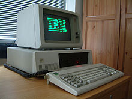
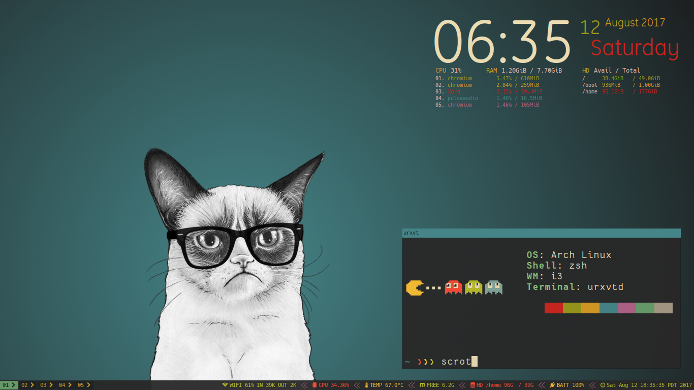

Portfolio of Adam Schaefers
1 the art of hacking
This page is an Emacs org-mode document and tells the story of my journey in to professional computing.
Here's me, just married 9/19/2020 A.D. — during the apocalypse
1.1 In the beginning…

My first computer was one of these, pre-loaded by dad with a boat load of cracked games, such as "Hopper."
This box was the mystery of my childhood– I knew it had potential to do really cool things, if only I could connect to the internet.
There was always some odd file that I would find on the system and then I would try to figure out if it was a program that I could execute.
I learned DOS commands and batch scripts early on in this way, before GUI's were much of a thing.
I was running my own WAMP stacks and messing around with frameworks like "Php Nuke", "PhpBB" and exploring Geocities in Junior High. This was all mostly to make cool websites for my video game "clans."
1.2 DIY ethics and Unix philosophy
au·to·di·dact: a self-taught person
I graduated High School in 2006. I was homeschooled before it was the cool thing to do. 1 My parents were very forward-thinking in this regard.
My father taught me that if you want something done right, then you need to do it yourself.
This comes in to play later on when I realized out that I could learn anything I wanted on the internet– that the original hacker spirit is the Unix Philosophy 2 with DIY ethos. 3
1.3 Social Engineering: From hacking people to hacking machines (career change)
Social Engineering: (in the context of information security) the use of deception to manipulate individuals into divulging confidential or personal information that may be used for fraudulent purposes.
I dropped out of college early on, not having a high regard for the system 4 at the time. I traveled and read a lot of books on Philosophy, History, Theology and English – as any millennial should.
I landed in Honolulu, Hawaii. There I worked as a Valet Driver, Bellman, Doorman in some of the nicest Hotels and Restaurants on the Waikiki strip.
A few years back I found a random photograph of myself (see above) while googling one of old my hotels.
While not malevolent– little did I know at the time– that I was receiving a free education in social engineering. The name of the game was called "Did he (or she) tip you?" and we knew how to get tipped– unwittingly by hacking people. Like any good flick on HBO Max, the illusion was wealth and the key was social discourse. These skills would be invaluable later while working in tech as a white hat.
In this way, I have always been a "hacker."
1.4 Hacking: Not a bad thing– a fun thing!
What does hacking and work in the service industry have in common? Playful cleverness. In "Did he (or she) tip you 101, we quickly learn that to get tips, we have to have fun the guests.
Similarly put by an O.G. hacker,
I went to lunch with some GNU fans, and was sitting down to eat some tteokbokki (*), when a waitress set down six chopsticks right in front of me. It occurred to me that perhaps these were meant for three people, but it was more amusing to imagine that I was supposed to use all six. I did not know any way to do that, so I realized that if I could come up with a way, it would be a hack. I started thinking. After a few seconds I had an idea.
First I used my left hand to put three chopsticks into my right hand. That was not so hard, though I had to figure out where to put them so that I could control them individually. Then I used my right hand to put the other three chopsticks into my left hand. That was hard, since I had to keep the three chopsticks already in my right hand from falling out. After a couple of tries I got it done.
— Richard Stallman, Creator of Emacs and GNU coreutils, On Hacking 5
1.5 1984 – Security and Privacy
One day I looked up from my hotel with my Bellman standing next to me, and we noticed the glint of a scope from a far-off hotel room flashing at us.
Somebody was watching us. Nothing ever came of it, but we found it very odd at the time.
Also around that time Snowden 6 was revealing to the citizens of the United States that the government was illegally spying on all of us.
Since I always had a natural aptitude for computing– after all my first Linux distro was Ubuntu 8.04 Hardy Heron ~2008– I found all this was very interesting to think about. When Snowden revealed that smartphones were backdoored by the NSA, among other things, it reignited something in me.
Around this time I found renewed joy in computing, and the cypher-punk feels of Linux. In those days one would have found me growing out my neckbeard whilst reverse SSH tunneling 10 servers deep before connecting to the TOR network (and every other privacy-centric network I could find.) I soon joined various IRC channels, where we would discuss merits of various Linux distros and open-source software for hours. It was just a hobby at first– that is, privacy and security research– I hadn't the slightest where this would all lead.
I soon found myself moving back to Oregon, where I was born raised. I told my parents at the time, "There's something good here, I'm learning a lot. I will be doing this for a living soon enough, but there's a lot to learn first…"
I started watching The Lunduke Show. I went to YouTube University, catching every TutoriaLinux (Dave Cohen) episode I could – I sent him a thank you Email years later along the lines, "Hey, thanks for sharing your knowledge and helping me to get grounded in the industry." He replied back, too. Dave's a champ.
Admittedly, I used to rice my desktop back then. I used VIM like a pleb7 and apparently people still like work in that regard.

1.6 White Hats: Seriously, hackers aren't all bad
white hat: a person who hacks into a computer network in order to test or evaluate its security systems.
As opposed to "black hat,"
black hat: a person who hacks into a computer network with malicious or criminal intent.
Recruiter note: I like to think of myself as one of the good guys!
Now Google famously had a "Don't be evil" Code of Conduct. 8 And I would that they still did… I digress…
1.7 Want to join a tech cult?
There's pizza…
Like any good cult, I found that tech has its own jargon and can give you sense of identity,
Did you even google it? RTFM dude… 9
There are even holy wars in tech, see Vim vs. Emacs and Tabs vs. Spaces, as brilliantly demonstrated in the T.V. sitcom Silicon Valley, 10
I started COOSLUG (Coos Bay, Oregon) L inux U ser G roup with my buddy Zeb DeOs, the only other Hacker I knew in the area. He's a prominent full stack developer and I owe this guy everything career-wise.
In a world where things are so often out of our control, the fact that we can program computers do exactly what we want is a strange comfort, and we shared this in common.
We met once a month or so and ordered pizza, with prolonged Emacs hacking sessions and candid discussions on the state of the industry, jobs and open source software.
1.8 The bootcamp years and Imposter Syndrome
Imposter Syndrome is a funny thing. When you're feeling impostery you know that, "I'm good enough to be here and do this job." But you don't feel that way on the inside. I felt like I had something to prove, and that I needed to be the best before I entered the field full-time in a paid atmosphere. I suspect it stems from the ever-changing, ever-learning nature of tech. I recommend you accept that and forget about it. There's nothing wrong with you dude, you're fine! I spent several years in this hell, I built the place! I don't regret it, but I also don't recommend it.
At the time, I was on the computer 12 hours every day, studying.
I installed Arch Linux a hundred times, I nigh memorized the now infamous wiki –
FreeBSD, the same– and I actually read the Handbook.
I learned the ins-and-outs of AWS: Route53, S3, EC2, Cloudfront and more.
I settled on a text editor, emacs and started to form my own opinions on things.
I had another mentor during this period of my life, Chris Giorgi of #gentoo / #funtoo on Freenode, he was an awk-programmer extraordinaire. He taught me how to use ZFS. He taught me that there are shell scripts and then there are shell scripts. Finally, somebody more paranoid than I was, he sanity checked and validated every input variable.
Here's a classic fork bomb,
evil () {
evil|evil &
}
evil
Better yet, as we all love good one-liner,
:(){ :|:& };:
Put that in your Terminal and smoke it!
Corny jokes aside, I learned POSIX shell script and system administration here in this phase, which leads in to the Devops path now-a-days.
Programmers need to use the Terminal and know some bash, but when you're working on an embedded system with limited disk space and ram, you're probably not going to have Bash, and your bashisms are going to fail you. But shell is there, and POSIX is still KING. Chris taught me POSIX shell– it's a dying art and I'm glad to carry this tradition.
1.9 Open Source: a brave new world
During this time I became a Linux distro developer and package maintainer. I volunteered on Funtoo Linux in the beginning, troubleshooting Daniel Robbin's new distro, Funtoo Linux, and writing technical documentation like this Libvirt wiki page. Drobbins is the creator of Gentoo Linux– you may have heard of it.
I went on a brief stint with NixOS, where with the oversight of Dustin Lacewell aka ldlework, (my only Silicon Valley friend in tech), I built my own zfs-on-root installer called Themelios which still enjoys some usage to this day. NixOS is interesting, I'll just say that– and I respect the work they're doing, along with Guix, but I've come to prefer a simpler approach that is Stali Linux and OASIS. While I understand the problems solved by dynamic linking and the attempt to resolve the accompanying dependency hell issues in the the nix whitepapers, I tend to prefer instead the simpler solution of static linking, as disk space is no longer expensive.
After that I distro hopped on over to KISS (Keep it simple, stupid) Linux where I worked with Dylan Araps, author of Neofetch. This distro is amazing, and only uses some odd 30 Megabytes of RAM. Dylan became another one of my all-time great mentors. I am the number two all-time committer on the classic community repo, as I was maintaining the suckless and GNU stacks. One time I fixed a bug in a package written in C, and submitted a patch where it officially was merged at Kernel.org. I also did some work on the KISS init scripts and a lot of testing for the package manager. I'll never forget the day I left the project, and released my packages that I was maintaining back to the KISS community. I made that decision as I was nearing getting married in 2020, and I was also finally working in a paid capacity.
During this phase I really felt like I had graduated. Tools like find, grep, git, patch and diff would now be second nature. I built my own Emacs framework called "Spartan Emacs". I knew POSIX shell and Bash,
Lisp, some C, Ruby and Python. I was finally a software developer and it was time for a job.
Open source software experience is the best and it makes me who I am. This experience, to this day, is more valuable than anything I have ever done in paid capacity.
Beyond this, I learned a lot about PATH and ENVIRONMENT in Linux, and that Unix can be your IDE. Here's some classic books on the subject,
The Unix Programming Environment and C Programming Language by K&R.
1.10 Certifications
Terraform AWS Devops
1.11 Experience
1.11.1 Immaculata Studios, 2021—Present
1.11.2 Devops Consulting, 2020—2021
1.11.3 KISS Linux - (GNU stack package maintainer), 2019—2020
1.11.4 Self-imposed devops bootcamp - Perfecting my craft, 2016—2019
1.11.5 My first Linux distro - Ubuntu 8.04 Hardy Heron, —2008
1.12 Interests
Linux DevOps Debugging and problem solving Simple performant fault-tolerant systems Task automation Security & privacy
1.13 Technology I use
1.13.1 GNU / Linux (Redhat, Ubuntu, Arch, NixOS…)
1.13.2 Emacs
1.13.3 Git
1.13.4 SSH
1.13.5 GPG
1.13.6 Posix Shell / Bash
1.13.7 MySQL
1.13.8 ZFS
1.13.9 Php
1.13.10 Python
1.13.11 Drupal
1.13.12 Civicrm
1.13.13 Docker
1.13.14 Ansible
1.13.15 AWS (Route53, Cloudfront, S3, EC2, SES, aws-cli, etc.)
1.14 Current research
Python. I want to use Python to replace Posix sh and Bash, especially in MySQL administration. MySQL database administration at scale. I'm researching how to make databases with millions of records and insane JOIN queries faster.
1.14.1 Python
I want to use Python to replace Posix sh and Bash, especially in MySQL administration.
1.14.2 MySQL database administration at scale.
I'm researching how to make databases with millions of records and insane JOIN queries faster.
2 Blog
2.1 Current reading list
Python Crash Course Python Workout: 50 ten-minute exercises Getting Started with SQL SQL Practice Problems
2.2 Work responsibilities
Find, report and fix bugs Collaborate with a team using version control Documentation writing Implement an effective CI/CD pipeline Evaluate various DevOps solutions and make recommendations Migrate and deploy large Drupal and Civicrm websites Monitor and maintain public and private dev, staging and production servers Monitor and maintain high volume mail servers Research performance optimization issues Assist devs and project managers to better serve our clients
2.3 Work projects
Sometimes I get assigned fun little coding projects,
Redmine uploader - Using the Redmine API, pipe content to my redmine uploader script to update internal redmine issues Hosting stats - Gather monthly hosting statistics and post them to redmine Slow-site checker - Alert us if sites are loading "slow" Uptime checker - Alert us if sites are down Misc. ZFS dataset management and maintenance scripts Create a local docker-compose environment that imitates what we use in production for our dev team
2.4 Side projects
Cooslug was founded in 2018, which consisted of only Zeb and I, but we made it awesome SystemE (using Emacs to init my operating system) made the top 10 on Hacker News for a day Spartan Emacs distro Themelios (a NixOS on ZFS installer) I'm interested in creating a relatively decentralized, secure and private communication platform similar to https://riseup.net
2.5 Open source
2.5.1 Kernel.org
[PATCH] libcap 2.33 use schedyield instead of pthreadyield Funtoo Linux Libvirt documentation Commits to the KISS Linux package manager Commits to the KISS Linux init scripts Commits to KISS Linux community packages Misc. Bug Reports
2.6 Contact
Footnotes:
https://www.census.gov/library/stories/2021/03/homeschooling-on-the-rise-during-covid-19-pandemic.html – once thought of as odd, it's now the new normal!
https://en.wikipedia.org/wiki/Unix_philosophy – The Unix philosophy, originated by Ken Thompson, is a set of cultural norms and philosophical approaches to minimalist, modular software development.
—wikipedia
https://en.wikipedia.org/wiki/Do_it_yourself – DIY ethic is the ethic of self-sufficiency through completing tasks without the aid of a paid expert.
—wikipedia
https://archive.org/stream/The_Conscience_of_a_Hacker/hackersmanifesto.txt – Ah, to be an angsty teenager again.
https://stallman.org/articles/on-hacking.html – Hacking isn't bad, it's fun.
https://en.wikipedia.org/wiki/Edward_Snowden – Snowden, a real American hero.
pleb – an ordinary person, especially one from the lower social classes. —google
https://en.wikipedia.org/wiki/Don't_be_evil – Google famously had a "Don't be evil" Code of Conduct.
https://en.wikipedia.org/wiki/RTFM – RTFM is an initialism and internet slang for the expression "read the fucking manual" – typically used to reply to a basic question where the answer is easily found in the documentation, user guide, owner's manual, man page, online help, internet forum, software documentation or FAQ.
https://www.youtube.com/watch?v=SsoOG6ZeyUI – Silicon Valley features Vim vs. Emacs and Spaces vs. Tabs